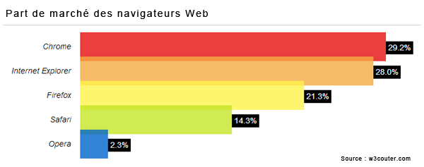

Créer un site Internet de qualité nécessite de réunir les différentes conditions suivantes visant finalement à satisfaire les cibles pour lesquelles le site Internet est conçu.
1-L'utilité du site web
Plutôt que consacrer l’essentiel de ses pages à la présentation de votre société, de vos installations et de votre historique, votre site web doit s’efforcer en priorité de rencontrer les attentes des utilisateurs :
- apporter des solutions à leurs problèmes
- proposer les produits ou les services qu’ils recherchent
- les informer sur ce que peut leur amener votre entreprise
2-l'accessibilité du site web:
L’accessibilité du web signifie que les sites web, les outils et les technologies sont conçus et développés de façon à ce que les personnes handicapées quel que soit son handicap (physique, auditif, visuel,...) ou non handicapées puissent les utiliser. Plus précisément, les personnes peuvent :
- percevoir, comprendre, naviguer et interagir avec le web
- contribuer sur le web
Donc l’accessibilité est essentielle pour les développeurs et les organismes qui veulent créer des sites et des outils web de haute qualité, et ne pas exclure des personnes de l’utilisation de leurs produits et services.
3-La fiabilité d’un site web :
Il est important d'exercer un regard critique sur les résultats d'Internet car il n'y a aucun système de contrôle ou de vérification des données sur Internet. N'importe qui peut publier n'importe quoi sur Internet. De nombreux indices vous permettent de savoir si un site est fiable et pertinent ou non.

4-La compatibilité:
les navigateurs internet (Chrome, Firefox, Safari, Edge, Internet Explorer, etc.) interprètent 3 langages pour pouvoir afficher un site web sur l’écran de l’internaute :
- le HTML pour le balisage et le contenu textuel
- le CSS pour les styles visuels
- le Javascript pour le fonctionnel
Quand on parle de compatibilité d’un site avec un navigateur web, la question n’est donc pas de savoir si le rendu du site sur ce navigateur est exactement identique à la maquette réalisée en amont du développement, mais si l’affichage proposé est cohérent et fonctionnel.
La visibilité du site :
Nous savons nous occuper de votre site, mais nous savons surtout vous guider et vous aiguiller sur les différents dispositifs de communication que vous offre le web. Nous accompagnons nos clients dans la définition de leur présence web et rendre cette présence visible. Nous intervenons sur :
- Création et refonte de site web et blogues;
- Gestion de site web;
- Création de contenu optimisé web;
- Référencement naturel (SEO) et Référencement payant (SEA);
- Statistiques et tableau de bord.